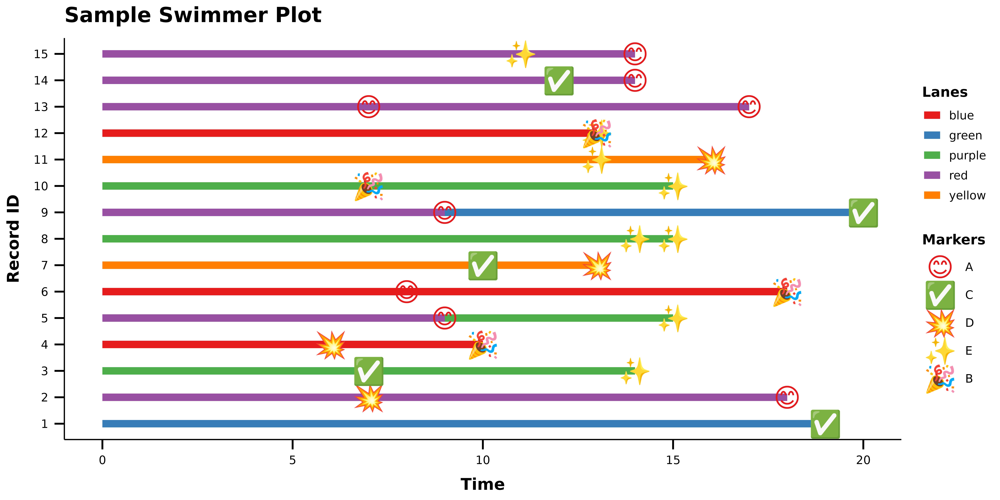

Random Data Sets
In this example, we’ll set up some random data for reproducibility by defining dataframes for our lanes and our markers.
set.seed(123)
lane_data <- tibble(
x = 0,
xend = sample(5:20, 30, replace = TRUE),
y = factor(rep(1:15, each = 2)),
colour = sample(c("red", "blue", "green", "yellow", "purple"), 30, replace = TRUE)
)
set.seed(123)
marker_data <- tibble(
x = sample(5:20, 30, replace = TRUE),
y = factor(rep(1:15, each = 2)),
label = sample(c("A", "B", "C", "D", "E"), 30, replace = TRUE),
glyph = sample(c("😊", "🎉", "✅", "💥", "✨"), 30, replace = TRUE)
) |>
mutate(
glyph = dplyr::case_when(
label == "A" ~ "😊",
label == "B" ~ "🎉",
label == "C" ~ "✅",
label == "D" ~ "💥",
label == "E" ~ "✨",
.default = NA
)
)And then we’ll call those dataframes into their appropriate swim and marker geom functions:
ggplot() +
geom_swim_lane(
data = lane_data,
aes(x = x, xend = xend, y = y, colour = colour),
linewidth = 3
) +
geom_swim_marker(
data = marker_data,
aes(x = x, y = y, marker = label),
size = 8
) +
scale_colour_brewer(name = "Lanes", palette = "Set1") +
with(
marker_data,
scale_marker_discrete(glyphs = glyph, limits = label, name = "Markers")
) +
labs(
title = "Sample Swimmer Plot",
x = "Time", y = "Record ID"
) +
theme_ggswim()